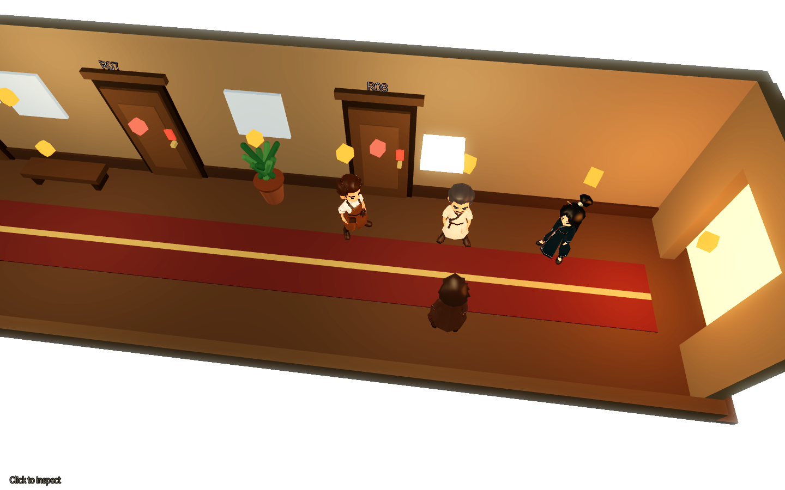

起床与卧室探索
已测 · 测试未完成
53227 steady frames; 50 above 33.3 ms after the 1.5-second warmup exclusions. P95 16.799 ms, P99 25.098 ms, average 59.98 FPS. Peak observed load: three Godot processes, including two pre-existing instances; this test owns one. Runtime includes observer and tool waiting.
61 visible-text changes; maximum 12 words and 60 characters in one frame. Seven unclassified strings counted conservatively; recognized nameplates and single-key icons excluded. Script checks found no non-Latin violations; Latin script alone does not verify English.
Independent observer: 6/10. The detective moves to the wardrobe and its door opens; the bed cover changes position. The wardrobe edge obscures the arm, and the bed action lacks visible hand-to-cover contact. Visible motion only. Close-time isolation failure is retained beside this assessment.
Provisional 0: evidence unavailable; test incomplete. Same-session raw Master and Music audio contain signal, but both segment analyses timed out after 180 seconds. FFmpeg inherited MCP stdin and stalled. Retain original failed analysis; the next revision disables interactive input and requires a full retest.
Provisional 0: evidence unavailable; test incomplete. The observer reached the hallway and recorded waking, unexplained scratches and departure; memory loss was absent. The close receipt then exposed current_scene, violating the required server-side isolation guarantee. A valid fully isolated test is unavailable; repeat with a fresh observer after repair.
Independent observer: 6/10, after completing the blind account. Same-session bedroom framing and furniture placement match the assigned reference, while pure-white cutaway surroundings, harsher floor lighting, flatter surfaces and window lighting diverge.
Independent observer: 7/10. Markers and the bedroom door guided the transition. The opening question and wardrobe dialogue establish a mystery; the bed inspection reveals little and the exit transition is abrupt. No gameplay phase blocked. Test incomplete due to close-time isolation and audio analysis failures.

